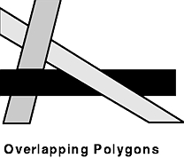

By default, GL does no hidden surface removal: figures are rendered on the screen in the order that they are drawn. For most 3-D drawings, it is important to draw only those surfaces that are nearest the eye, at least for opaque objects. All other surfaces are obscured by those nearer the eye. The time it takes to draw surfaces that are not visible in the final scene can cause a noticeable degradation of performance in complex scenes where drawing speed is important.
There are many ways to do hidden surface removal, depending on the types of figures being rendered. The primary method used by GL is a z-buffer, which works by calculating the distance to the eye from the surfaces covering each pixel and drawing only the closest surface. The calculation has to be done on a per-pixel basis because it is possible to have a set consisting of as few as three polygons, each of which is overlapped by another in the set, as in the following figure:
Note: Z-buffer hardware is optional on the High Performance 8-Bit 3-D Color Graphics Processor and the High Performance 24-Bit 3-D Color Graphics Processor. Be sure that you have a z-buffer installed on your system before using z-buffer features. Z-buffering does not work unless the z-buffer option is installed.